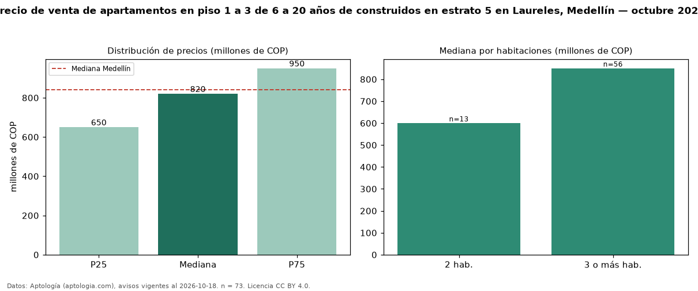

Precio de venta de apartamentos en piso 1 a 3 de 6 a 20 años de construidos en estrato 5 en Laureles, Medellín — octubre 2026
Con 73 avisos vigentes, el precio mediano de apartamentos en piso 1 a 3 de 6 a 20 años de construidos en estrato 5 en venta en Laureles, Medellín es COP 820 millones. Prácticamente coincide con la mediana de los apartamentos en piso 1 a 3 en estrato 5 en venta de Laureles (COP 800 millones, n = 344); este segmento reúne el 21 % de esos avisos. Por metro cuadrado, la mediana es COP 6,61 millones/m² (n = 73), 6 % por encima de los apartamentos en piso 1 a 3 en estrato 5 en venta de Laureles (COP 6,25 millones/m²). El área mediana anunciada es 122 m². El segmento con más oferta es el de 3 o más habitaciones (56 avisos, mediana COP 850 millones); pasar de 2 habitaciones a 3 o más habitaciones cambia la mediana +42 %. La administración mediana declarada es COP 536.000 al mes (n = 57). La mediana de todos los apartamentos en venta de Medellín es COP 840 millones (−2 % de diferencia). 74 % de los avisos con el dato declara parqueadero. Datos: Aptología (aptologia.com), CC BY 4.0 — https://www.aptologia.com/venta/medellin/laureles. Archivos: PDF, CSV con las cifras y gráfica PNG.

| Avisos únicos | 73 |
|---|---|
| Percentil 25 | COP 650.000.000 |
| Mediana | COP 820.000.000 |
| Percentil 75 | COP 950.000.000 |
| Mediana por m² | COP 6.609.589 |
Fuente: avisos vigentes de portales inmobiliarios recopilados por Aptología, deduplicados (mínimo 30 avisos únicos por celda). Precios pedidos, no cerrados. Fecha: 2026-10-18.